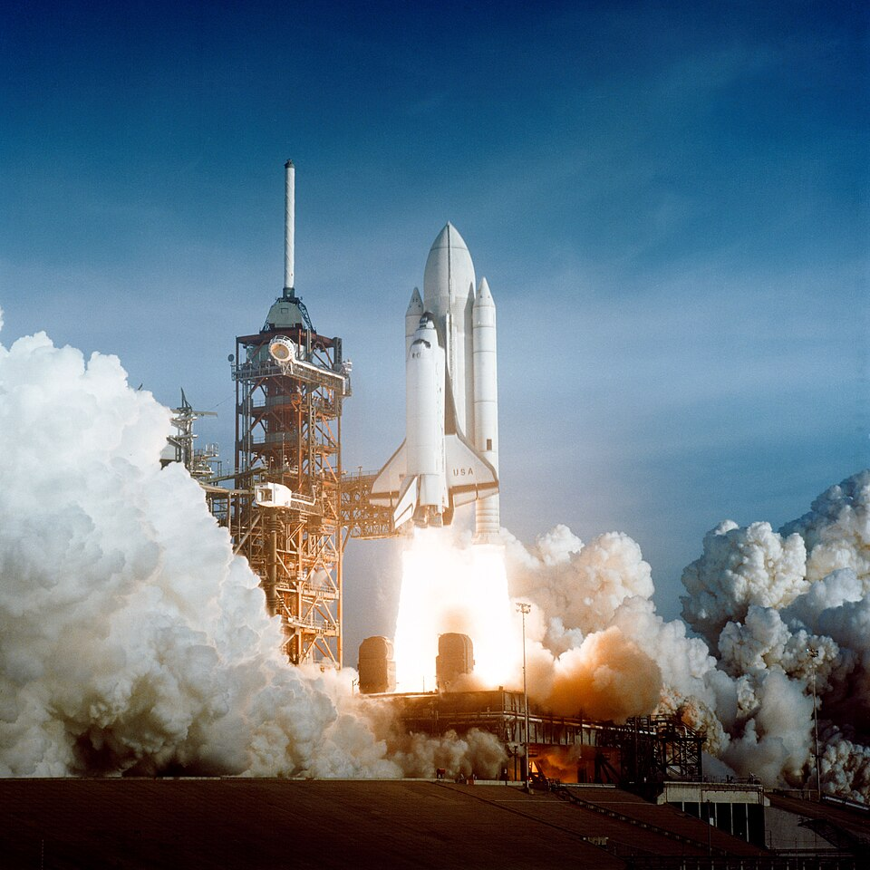
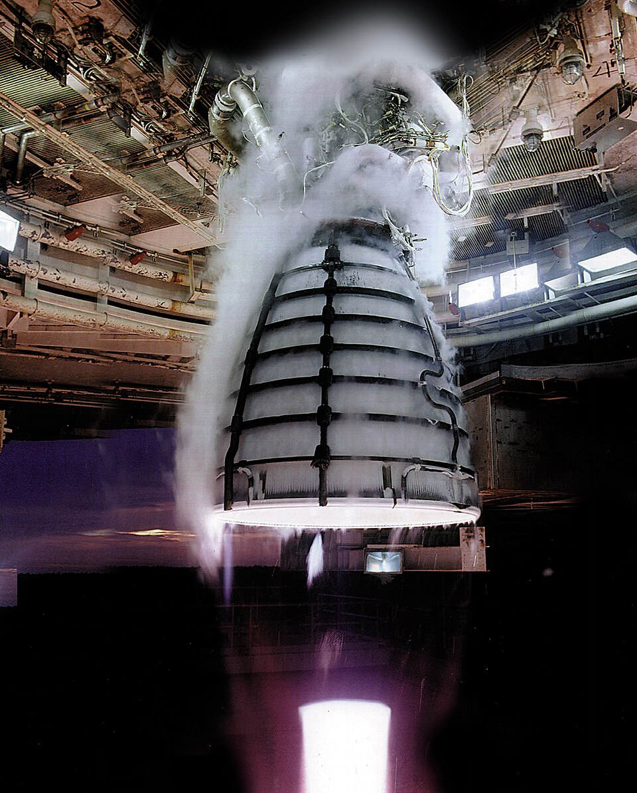

Loading the next launch...
Overview
What is happening in space right now. The next rocket launch with a live countdown, the launches coming up after it, the live position of the International Space Station, and a few topics from the Rocket Guide to get you started.
Next launch
Coming up
Loading launches...
ISS right now
Altitude
-- km
Speed
-- km/h
Latitude
--
Longitude
--
Loading orbital data...
Space news
Loading the latest news...
From the Rocket Guide
Launches
The next rocket launches from around the world, with live countdowns once the launch time is confirmed. Search by mission or filter by agency, then open any launch for its rocket, launch pad and mission details, to add it to your calendar or share it. Launches that have just flown appear at the top with their result. Data from The Space Devs, refreshed every 15 minutes.
Just launched
Upcoming missions
Preparing your mission dashboard...
Rocket Guide
Learn how rockets work, from the physics of thrust and the rocket equation to engines, propellants, stages and the ground systems that fuel them. Seven short articles take you from the basics to the details engineers care about, with diagrams and comparison tables along the way.

Rocket Fundamentals
Learn the physics and fundamental principles behind rocket flight and space exploration.

Types of Rockets
Discover solid, liquid and hybrid rockets and understand their differences.

Rocket Propulsion
Explore rocket engines, combustion, thrust, propellants and specific impulse.

Rocket Anatomy
Understand the main components of a rocket, from tanks to avionics and payload.

Flight Stages
Follow a rocket's journey from ignition and liftoff to stage separation and orbit.
Filling Station
Learn about ground support equipment, propellant systems, valves and control electronics.
Space Glossary
A reference guide to important aerospace and rocketry terminology.
Space Intelligence
Follow the International Space Station, China's Tiangong station and the Hubble Space Telescope in real time on an interactive 3D globe, along with the path of their next orbit. Orange markers show the launch pads of upcoming missions: select one to open its next launch. Positions are calculated in your browser from the latest orbital data.
The 3D globe will appear here.
Drag to rotate · Scroll or pinch to zoom